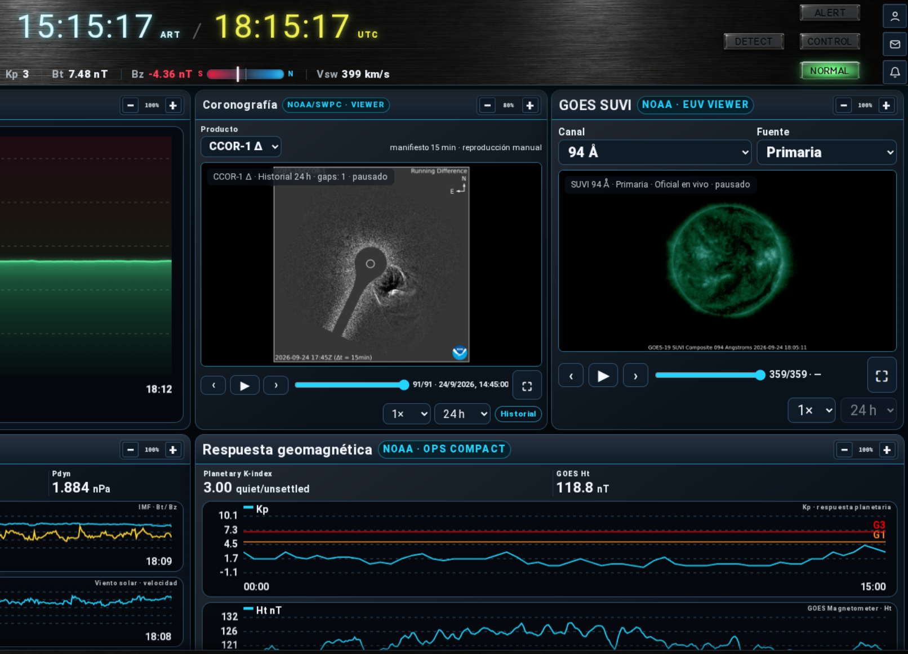
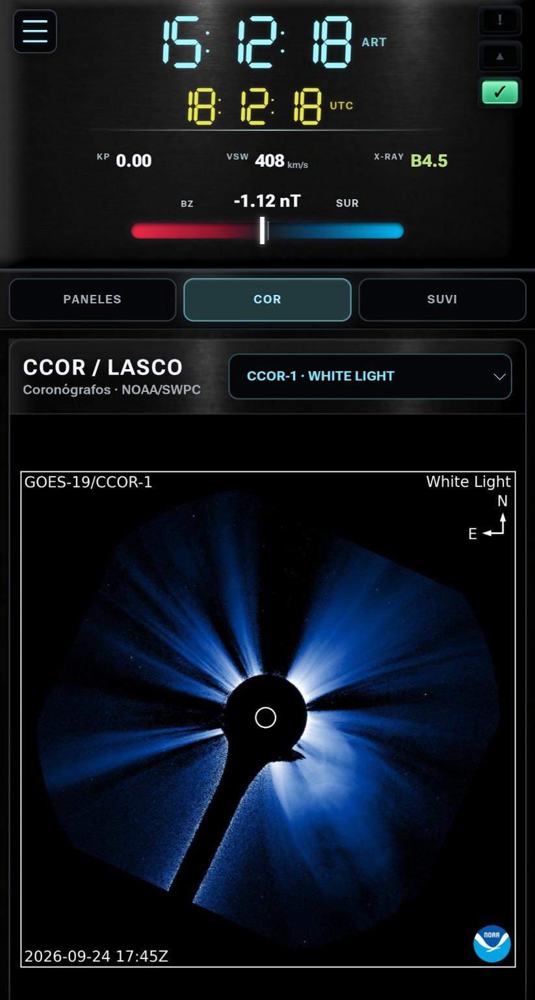
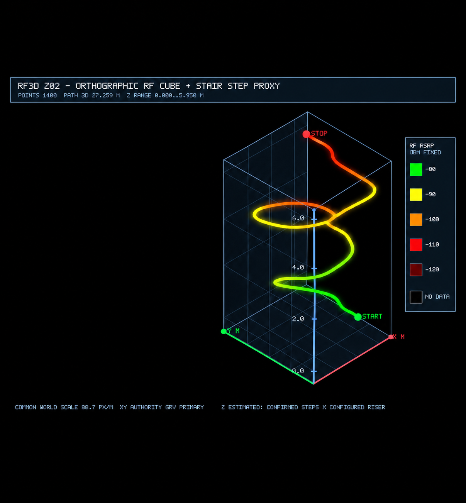
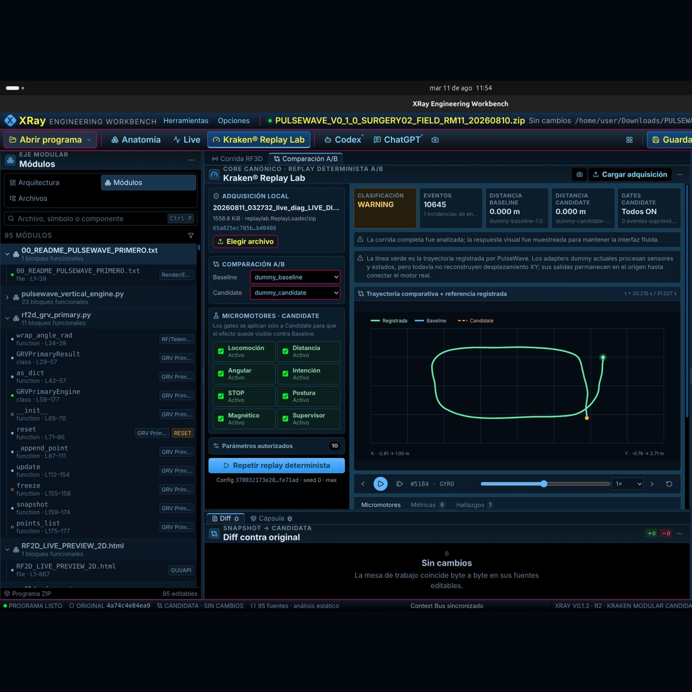
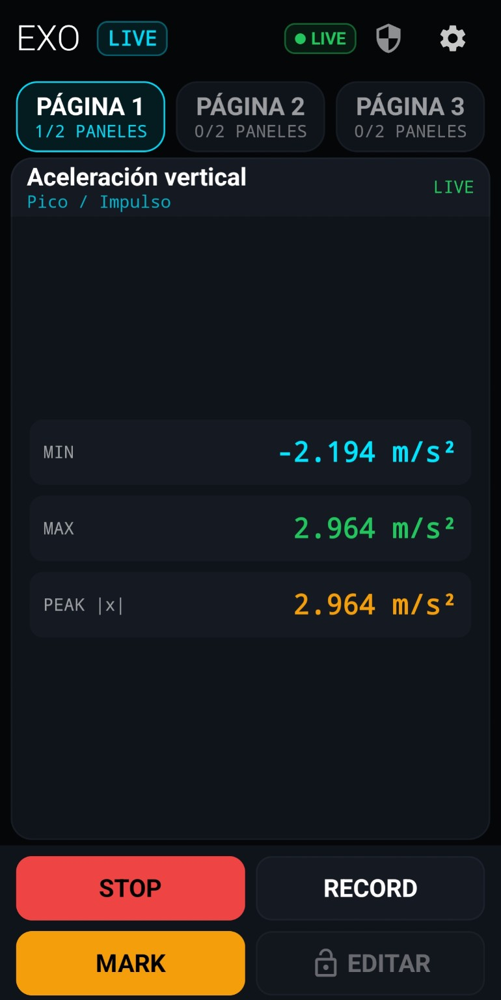

Proyecto
BASE
SW Station
Monitoreo técnico del clima espacial
Estación de monitoreo y análisis operacional de clima espacial con información oficial de NOAA y NASA, visualización técnica y captura de evidencia.
ANÁLISIS · INGENIERÍA · DESARROLLO
Análisis de Datos Evaluación de Sistemas Implementación de Soluciones
Desarrollo de soluciones técnicas orientadas al análisis, la instrumentación, el monitoreo y la implementación de herramientas de software.
ACERCA DE ADESIS
En ADESIS integramos análisis de datos, evaluación técnica y desarrollo de herramientas para transformar necesidades concretas en soluciones implementables.
Este sitio institucional se encuentra en desarrollo y será el punto de acceso oficial a proyectos, aplicaciones, soporte y documentación.
DESARROLLOS

Monitoreo técnico del clima espacial
Estación de monitoreo y análisis operacional de clima espacial con información oficial de NOAA y NASA, visualización técnica y captura de evidencia.

Monitoreo móvil del clima espacial
Plataforma móvil asociada a SW Station para monitoreo, visualización y consulta operacional de clima espacial on the go.

Posicionamiento autónomo · mapeo RF
Sistema de posicionamiento autónomo para mapear y medir señal de RF.

Ingeniería de código · análisis y simulación
Mesa de trabajo para ingeniería de código. Analiza, secciona, visualiza y simula el comportamiento del desarrollo, aportando claridad y facilitando su depuración y ejecución.

Graphic Interface for Development
Entorno gráfico orientado a facilitar herramientas y operaciones de desarrollo.
Sistema automatizado de preservación, respaldo e integridad de archivos de proyecto.
En desarrollo